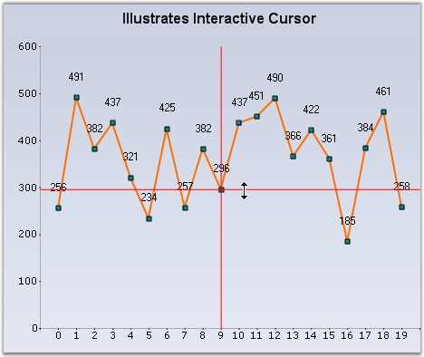
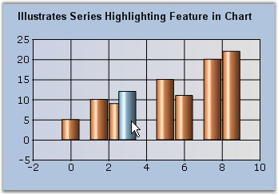
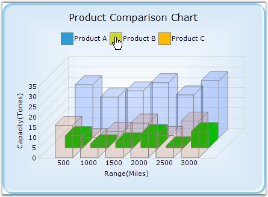

Interactive Cursor
This feature lets you position the mouse pointer at a specific data point in a series and hint you on it's x and y values via a horizontal and vertical line passing through the data point and intersecting the x and y axis. These lines can be dragged around in order to position them at specific data points.
Interactive Cursor can be implemented by creating an instance of ChartInteractiveCursor with the ChartSeries as its input. Then add the instance to the Interactive Cursors collection as shown below.
|
[C#]
// Create a new instance of the ChartInteractiveCursor class and initialize chartseries into it. ChartInteractiveCursor cursor1 = new ChartInteractiveCursor(this.chartControl1.Series[0]);
// Add the instance to the ChartInteractive Cursor collection. this.chartControl1.ChartArea.InteractiveCursors.Add(cursor1));
//Color of the pointer cursor1.Color = Color.Red; |
|
[VB.NET]
' Create a new instance of the ChartInteractiveCursor class and initialize chartseries into it. ChartInteractiveCursor cursor1 = New ChartInteractiveCursor(Me.chartControl1.Series(0))
' Add the instance to the ChartInteractive Cursor collection. Me.chartControl1.ChartArea.InteractiveCursors.Add(cursor1))
'Color of the pointer cursor1.Color = Color.Red |

Figure 304: Chart Interactive Cursor
Chart AutoHighlight
The points or the series of the chart can be highlighted when the mouse hovers over them. Use the AutoHighlight property to enable this feature.

Figure 305: Column Highlighted on Mouse Hover
Chart Series Highlighting
You can also highlight a particular chart series alone while mouse hovering, and make the other series transparent. For this, you need to set SeriesHighlight property to true. The series can also be highlighted by hovering the mouse over a legend item corresponding to a particular series.
The following table describes properties related to this feature.
|
Property |
Description |
|
HighlightInterior |
Sets the highlight color for the series. |
|
HiddenInterior |
Controls the transparency of the non-highlighted series. While mouse hovering on a particular series, all other series will be set with the color, specified in this property. |
|
SeriesHighlightIndex |
If you want to highlight only a particular series alone, you need to set the index value for this property. The default value is -1. |
 Note: The AutoHighlight property should be
disabled to enable this chart series highlighting feature.
Note: The AutoHighlight property should be
disabled to enable this chart series highlighting feature.
|
[C#]
this.chartControl1.SeriesHighlight = true; this.chartControl1.Series[0].Style.HighlightInterior = new BrushInfo(Color.Gold); BrushInfo bi = new BrushInfo(GradientStyle.Vertical, Color.Red, Color.Red); this.chartControl1.Series[0].Style.HiddenInterior = new BrushInfo(0, bi); |
|
[VB.NET]
Me.chartControl1.SeriesHighlight = True Me.chartControl1.Series(0).Style.HighlightInterior = New BrushInfo(Color.Gold) Dim bi As New BrushInfo(GradientStyle.Vertical, Color.Red, Color.Red) Me.chartControl1.Series(0).Style.HiddenInterior = New BrushInfo(0, bi) |

Figure 306: Product B Series being Highlighted
 Drawing Interactive Cursor Separately – Either
Horizontally or Vertically or Both
Drawing Interactive Cursor Separately – Either
Horizontally or Vertically or Both